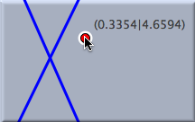
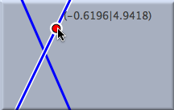
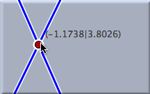

点を加える

前にも記したとおり、1つの点を描くのには次の3つの手続きを経ています。
- マウスのボタンを押す と点が生成されます。
- マウスをドラッグする とその点はマウスにくっついて移動します。 もしマウスをドラッグしながらすでにある要素に近づけるとスナップします。 このとき、点はスナップした要素の一部となり、要素がハイライトされます。 新しく加えられる点は、すでに存在する直線の交点または点にスナップします。（スナップ：その点に吸い付くように一致すること）
- マウスのボタンを離す と点の場所が決まります。 この瞬間、もしマウスが・・
- すでに存在する要素の上になければ、新しい自由点(可動要素)が追加されます。 この点は「動かすモード」で自由に動かすことができます。
- すでに存在している直線の上にあれば、新しい点はその直線の上にある自由点(可動要素)ということになります。 つまり「動かすモード」でこの点はこの直線の上のみを自由に動かすことができます。
- すでに存在している円の上にあれば、新しい点はその円の上にある自由点(可動要素)ということになります。 つまり「動かすモード」でこの点はこの円の上のみを自由に動かすことができます。
- すでに存在している2つの要素(直線、円、2次曲線)の交わりの上にあれば、新しい点はその交点として追加されます。 このような点はもとの直線などの場所に完全に依存しますから、従属点であって、点の色が暗い色で表示されます。 「動かすモード」でこの点だけを動かすことはできません。
- すでに存在している点の上にあれば、新しい点が追加されることはなく結果としてなにも起こりません。
いずれの場合でも、定義された要素はハイライトされ(光ったようになり)選択された状態になります。
次の図には主な3つの場合が描かれています。 つまり点がまったく自由な場合、点が直線の上を自由に動ける場合、点が従属点である場合です。 もう1つ注目したいことは、マウスをドラッグしている間、点の座標が絶えず表示されていることです。
| 自由点: |
直線上の点: |
交点: |
 |
 |
 |
もちろん、単に点を描きたい場所（ここでは2直線の交点）にマウスを持ってきてクリックすればその場所に点が描かれます。 上に書いた3つのステップが一度に行われます。 こうしてももちろん点を追加することができますが、上の3つのステップを踏まえて点の場所を決めたほうがより確実に図を書くことができます。 （単にクリックでは微妙にずれるかもしれません）
大切な３つのステップ
ボタンを押して、ドラッグして位置を決めて、ボタンを離す
要約
「押す、ドラッグする、離す」の一連の動作で新しく点を描く。
注意
次の2つの場合にはこのモードで点を描くのは適当ではありません。- 2つの要素が画面内で交わっておらず、画面外の交点に新しく点を追加したい場合。この場合は交点 モードを利用することができます。
- 3つ以上の要素が入り組んでいる場所に新しく点を追加する場合、次の3つの方法があります。
次も参照してください
Page last modified on Saturday 03 of March, 2012 [06:17:18 UTC].
The original document is available at
http://doc.cinderella.de/tiki-index.php?page=Add%20a%20PointJ